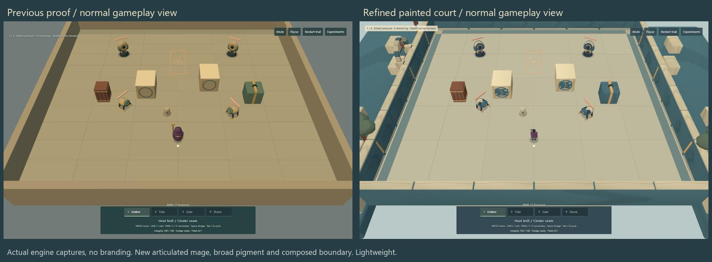
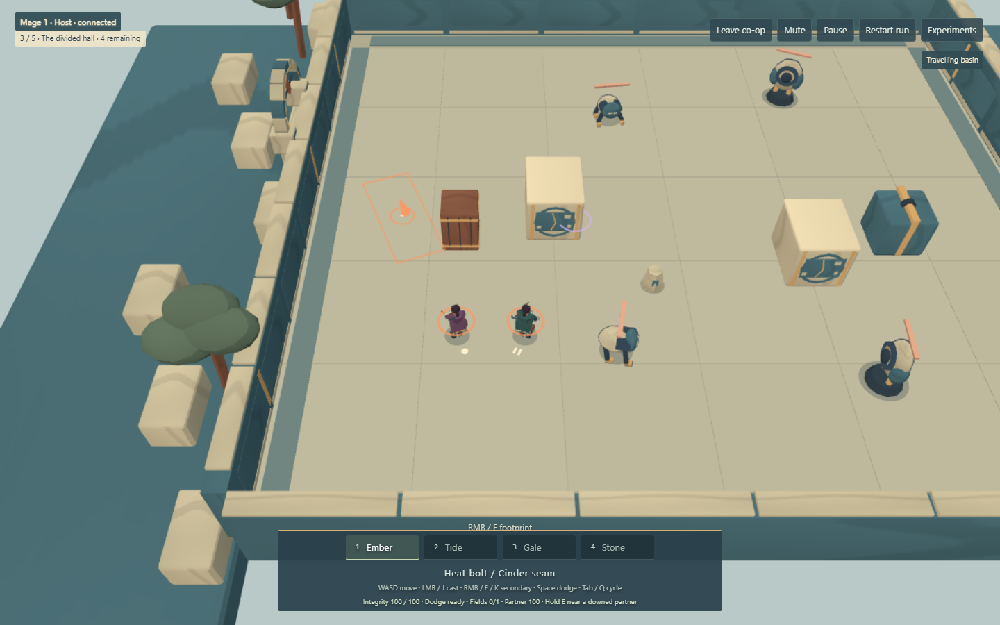
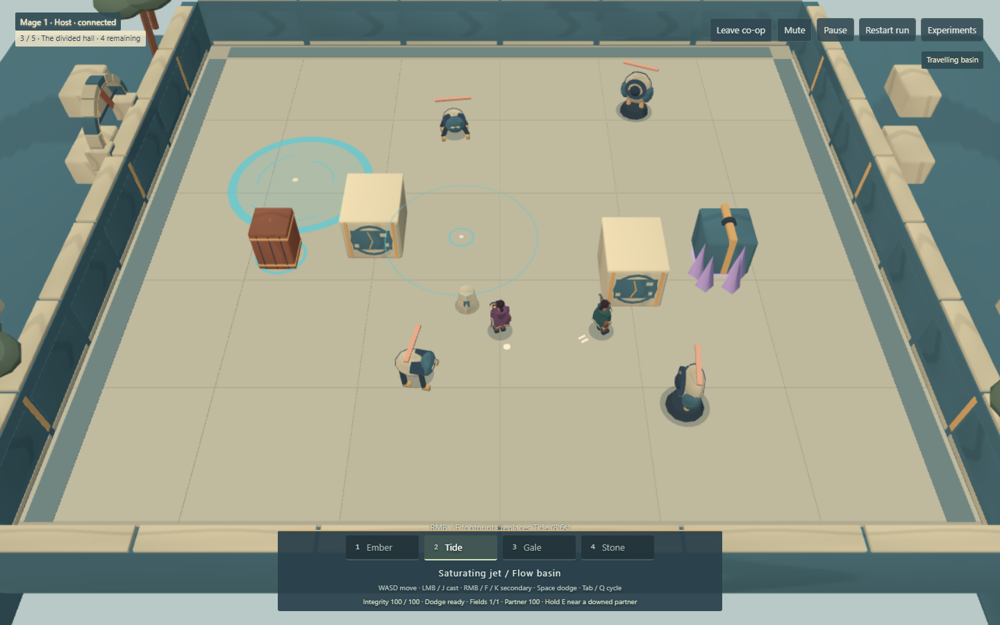
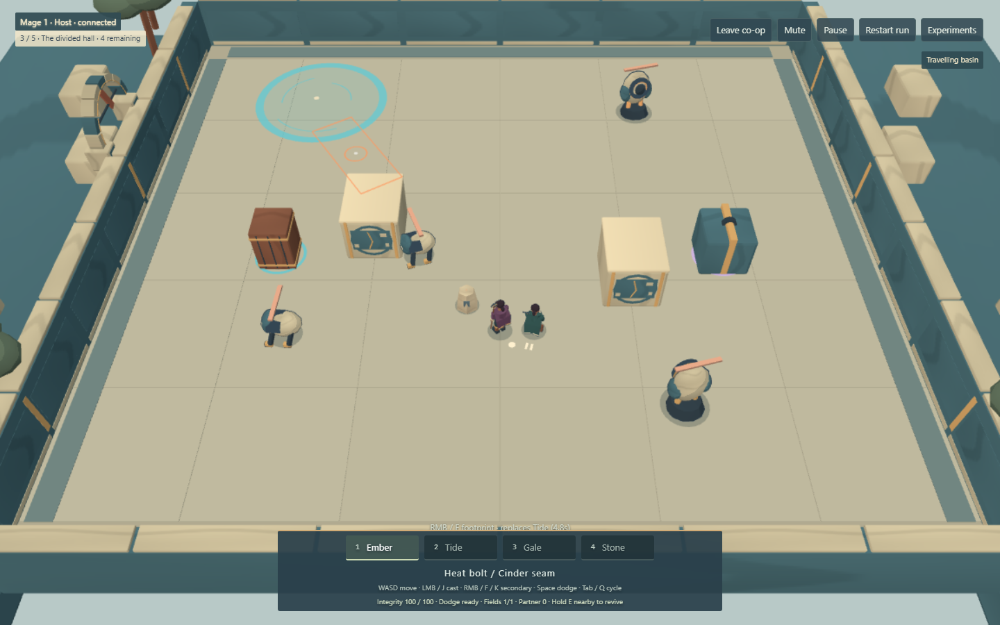
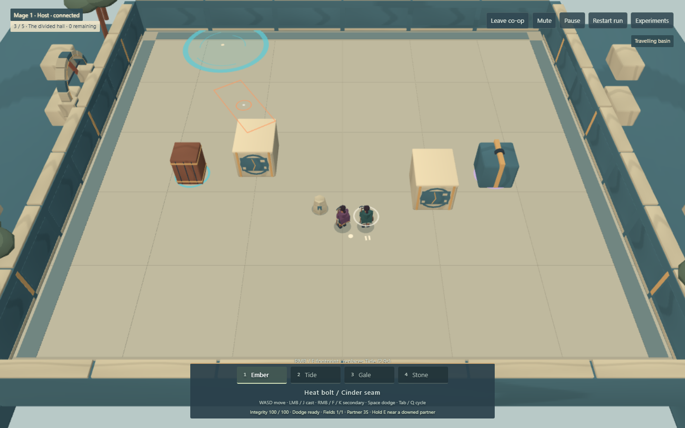
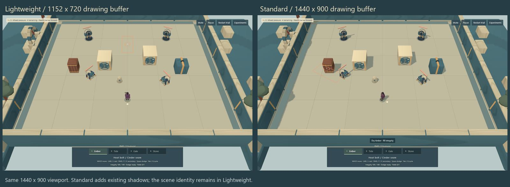

Ruinweavers · illustrated benchmark
One painted court.
A compact playable finish study: travelling human mages, surviving pigment
and crafted repairs inside old magical architecture. All images and clips
on this page are actual engine output, not concept art.

Quiet gameplay views without branding. The refined mage is fitted to the
existing gameplay body height; collision, camera and spells are
unchanged. Open an image for the full contact sheet.
Try it: WASD + pointer aim; hold LMB/J, RMB/F/K
Secondary, 1–4 or Tab/Q select, Space dodge, E revive/continue. Create
co-op and share the six-character code; your partner presses Enter to
join, then both Ready. The isolated court has no reward stop; the run link
and recorded sequences show alterations and rewards.
The corrective comparison

The earlier comparison coupled dark colors, folded shapes and Toon
shading. This pair shares geometry: illustration can stay bright and
legible. Palette and shading still change together, so this is not an
isolated shader experiment. The bright illustrated treatment is the
working preference.
In motion, through the same encounter
Two real local WebRTC clients, the same third court, camera, seed and
action sequence. Both players cast Ember, then perform an existing
reaction and alteration, move under enemy pressure, revive and choose
personal rewards. Silent clips retain recorded wall-clock speed.
Labelled HP/position/AI fixtures arrange the sample; spells and reward
choices use actual controls.
Previous · flow & echo
Storybook geometry and original material treatment.
Refined · flow & echo
Travelling Basin and the delayed Stone echo execute through the
unchanged simulation.
Previous · capacity & tether
The same second comparison loadout and lifecycle.
Refined · capacity & tether
Two manifestations and a moving Updraft. No altered spell timing or
damage for the recording.
Build labels and fixture details:
capture manifest. The same scripted intents
are not tick-identical film playback.
Personal identity, construction and recovery

Same Principle, stable plum/teal and disc/bar identity.

Alterations visibly change the existing actions.

A lowered, slumped kneeling pose; held E restores the partner
through existing rules.

Quiet reward cards keep compatibility and choice legible.
Reaction and visual diagnostics
Diagnostic emulation is not complete accessibility validation.
Lightweight is the base treatment

One shared 256×256 pigment map, broad vertex color and built-in Toon
shading. Ten GLBs total 1.38 MB raw; there is no post-process stack.
Standard adds ground shadows, while illustrated surfaces retain clean
graphic values. Four resets showed no accumulated texture/geometry
resources.
Native sample: Windows, installed headless Chrome 152, ANGLE Intel UHD /
Direct3D 11, two same-machine clients, 1440×900 viewport / 1152×720
Lightweight buffer. One short 60-frame/client casting sample stayed near
16.5 ms mean / 16.8 ms p95. This is not a sustained hardware guarantee
or remote-laptop measurement. Earlier SwiftShader captures are software
evidence only.
What this establishes—and what remains
Bright illustration, selective pigment and more human proportions work
together at the normal camera. The source recipe is repeatable:
npm run art:finish regenerates the editable Blender scene,
GLBs and shared map. The new performance uses a small joint hierarchy,
with no gameplay authority.
This remains stylized code-authored animation: no foot IK, facial
performance or precise hand-contact solver. A broader adventure still
needs composed rooms and authored performance polish. Applying this
vocabulary to the run should be a small collider-preserving rollout, not
five copies of this room. Both previous proofs remain available; no
other encounters have been dressed.